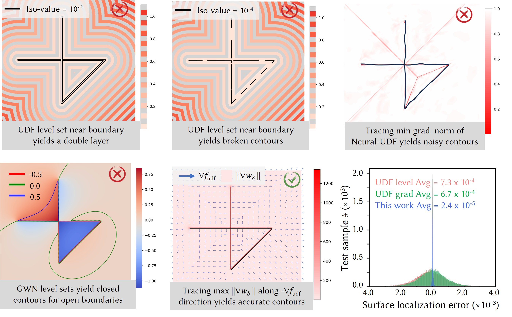

Hybrid Query Fields: Neural-UDF + Reg-GWN

Comparison of boundary detection strategies using neural UDF and reg-GWN fields. UDF level sets and UDF-gradient tracing can fail near boundaries, while reg-GWN level sets can also fail for open boundaries, as illustrated by the 0.5 level set. Tracing the maximum gradient norm of reg-GWN field along the negative neural UDF gradient direction accurately recovers the target boundary, which significantly reduces surface localization error.